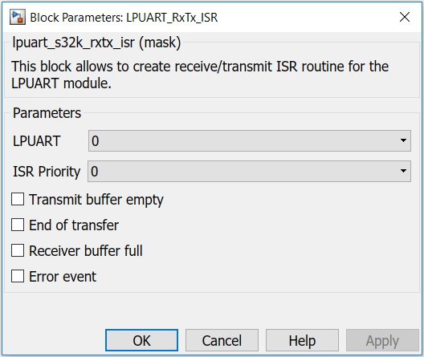

LPUART Receive/Transmit Interrupt Enable/Disable Block
The main functionality of the block is to enable/disable LPUART Receive/Transmit interrupts.
This block must be used with a transmit or a receive block.
Block Image

Inputs:
- None
Outputs:
- Function-Call: you can trigger a subsistem using this function call.
- Status Register (LPUARTx_STAT) value (uint32)
Parameters and Dialog Box
LPUART Module
Select which LPUART module to use.
ISR Priority
Interrupt priority level.
Transmit buffer empty
This event is triggered when the transmit data register (LPUART_DATA) is empty.
End of transfer
This event is triggered at the end of a transfer.
Receiver buffer full
This event is triggered when the receiver data register (LPUART_DATA) is full.
Error event
This event is triggered when an error occures.
Block Dependency
- Use LPUART_Config Block to configure LPUART
Block Miscellaneous Details:
- None